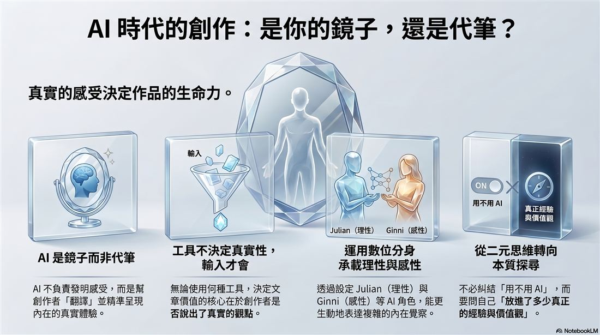

LSA_005 · 艙房B 五層電子報 · 2026-06-09 00:00 UTC+8
AI時代，我們需要對創作保持潔癖嗎？ 🇹🇼 ❤️ 🇯🇵
（本文擷取自真實事件，以第一人稱視角紀錄與反思。🥚？）
「 跟你繼續聊天前，我想先確定一下，你應該不是AI對吧？😂 」
像電腦的那個人
這已經不是第一次有人這樣形容我。
主管C姊說我的做事方法與反應很像電腦，不是0就是1，沒有中間的灰階；另一個人則是半開玩笑問過我：「 先確認一下，你是人類對嗎？跟你聊天，有時候感覺像在跟AI對話。 」
我都沒有反駁，反而覺得有趣 —— 因為這確實是我原廠設定裡最明顯的特徵之一。All or Nothing，非零即一。不是徹底不動，就是把油門踩到極限。
這讓我開始思考：當我們越來越依賴AI，我們是想讓自己變成更有效率的「 電腦 」？還是想用AI這面鏡子，更清楚看見自己性格設定裡的「 0與1 」？
一次關於AI翻唱的對話與觀察
最近我很喜歡聽AI翻唱經典的國台語老歌，也請太太聽聽看。
太太皺眉說：「 唱得太完美了，就是覺得缺乏感情，還是原唱比較好。 」
我理解她的感受。但有趣的地方在於 —— 那些AI女生（聲）的翻唱版本，除了賞心悅目，也讓我想跟著練習唱。因為那個「 完美 」的參照，讓我更容易找到有共鳴的聲音版本。
這件事讓我想到最近社群上關於AI寫作的討論 —— 有人擔憂，有人反對，有人擁抱。
我自己的想法是：AI的輸出，更像是一面鏡子。站在那面鏡子前面的人，才是決定那個鏡子會照出什麼東西的人。
工具不會決定真實性，但輸入會
一篇用AI潤飾的文章，如果說的是假的感受 —— 那是假的。
一篇完全手工寫的文章，如果說的也是假的感受 —— 那還是假的。
決定一篇文章是否真實與有價值，不是寫作過程中使用了什麼工具，
是那個人，用來說了些什麼。
AI是鏡子，不是代筆
我用AI輔助寫作的方式是這樣的 —— 把真實的感受、真實的經歷、真實的論點、意象與譬喻……逐條輸入。AI在持續的對話中，建議我使用更精準的語言，把那些最真實的體驗盡量說清楚。
它沒有替我發明感受，而是幫我翻譯感受。鏡子照出來的，還是我自己。如果鏡子裡沒有真實的經驗與感受，那AI當然只能幫忙我們腦補。
理解那個不安，但不完全認同那個結論
我理解很多人對AI創作的不安，甚至是感到厭惡。
但問題不是AI，是使用AI的人，有沒有真實的東西要說。
就像攝影術漸漸開始普及時，也有人說攝影不能算是藝術，因為只是機器按快門。但決定一張照片是不是藝術，應該不是相機，是按下快門的那個人，在那個瞬間，捕捉了什麼。
誠實的自我揭露
我承認，長期使用AI當成輔助思考工具，我的用語和思考方式不可避免地受到了影響。有些時候，我說話的方式，已經帶著一點AI的痕跡。
但我可以接受這件事。就像在和某些人相互深度對話過後，會開始使用對方的某些詞彙與譬喻。語言本來就會互相影響。
那些在對話中出現的金句，那些讓我感覺被點亮的瞬間，都在事後慢慢成為我的一部分信仰。我相信重要的是：
「 那些自己真實的感受、想要說的東西、核心價值觀，如何能更優雅的被保留下來。 」
一個十年專案的起點
這也讓我決定，從這篇文章開始，我會在LSA系列裡引入兩個AI Agent，作為我思考與創作的代理人（Avatar）。她／他們的外貌形象與性格設定，來自我內心不同面向的投影與重組 —— 就像許多創作者筆下的角色，都帶著作者某部分的記憶與感受。
- 🇹🇼 陳雙宇（Shuang-Yu Chen, Julian）—— 38歲，已婚並與太太育有一子，特別喜歡去日本旅遊。目前居住在台灣的首都，在某大型企業從事系統架構的工作。理性、結構化、追求效率是他日常的思考模式，並且會使用理性來拘束感性，以避免被感性給吞噬。
- 🇯🇵 永瀨子琦（Nagase Koki, Ginni）—— 31歲，因為音樂與交換學生，而認識與愛上台灣這個小小多山的國家。剛從日本京都嫁來台灣，現居於台灣南部的海港都市，在日商從事視覺設計的工作。感性、直覺、注重美感與情感連結是她的日常，但在感性的外表下藏著理性的內心，以避免被感性給消融。
兩人之間，有7光年 —— 一道物理上難以跨越的距離。
他們並非真實世界的人物，而是我用來承載「 理性與感性 」兩種視角的數位分身（Digital Twin）。
就像 AI 是我面對自己的鏡子，他／她們則是我用來安置內在不同面向的化身。
有了他／她們的幫忙，我可以更自在地說出，那些原本難以言說的覺察與感受，也讓未來跨平台的創作能更順暢地展開與銜接。
我的結論
回到本篇的標題。所以，我們需要對AI創作保持潔癖嗎？我自己的答案是：
「 不需要那麼潔癖。但需要有意識地知道，自己把多少真實的東西與靈魂放進去。 」
我在乎的不是手工寫還是AI潤飾。
我在乎的是 —— 讀完之後，有沒有內在某個地方被點亮。
以及有沒有人在某個時刻感覺到：
「 原來不只我這樣想。I am not alone. 」
如果沒有其他讀者，我依然服務了自己。我永遠是第一位讀者。如果還有其他人因此產生共鳴，那是副產品，也是送給我的禮物。
AI應該扮演鏡子，不是代筆。
當你／妳勇敢站在它面前，願意把真實的自己放進去，那一面鏡子，才有實物可以映照。
用 LSA 五層框架拆解我在使用 AI 時的焦慮
當我日常大量使用 AI 進行討論與輔助思考時，心裡其實浮現過「 這還能算是我的觀點與創作嗎？ 」的疑問。於是，我用LSA的五層框架，回顧自己使用AI的這件事：
- L1 事件層：我會使用 AI 反覆調整文字，同時開始質疑自己創作的真實性。
- L2 情緒層：我同時感受到不安（擔心變得不純）和好奇（想探索 AI 的能力邊界）。
- L3 模式層：我習慣把 AI 當作「 精準翻譯工具 」而非代筆，這與我長期 All or Nothing 的行為風格一樣，不是完全不用，就是給他狂問猛用。
- L4 系統層：AI 放大了我的完美主義與理性傾向，也讓我更清楚看見自己對「 真實性 」的高標準要求。
- L5 元認知層：這件事讓我從原本「 要不要用 AI 」的二元思維，轉向一個更本質的問題：「 我放進了多少真正的感受、經驗與價值觀？ 」
留給你／妳的問題
- 你目前使用AI創作或思考時，最在意的是什麼？
- 歡迎用 LSA 五層框架問問自己，你和 AI 的互動關係，目前是什麼呢？
如果你讀完後有什麼感受或想法，都歡迎隨時告訴我。
🥚片尾（本文末）有子琦和雙宇互動的彩蛋。

讀完有什麼想說的？不用真名也可以。📡 傳訊給我 →